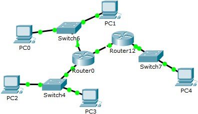
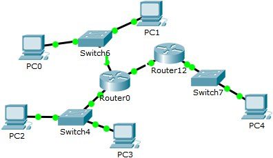

Лабораторная работа №3
"Настройка локальной сети передачи данных"
- Настройка коммутаторов и маршрутизаторов.
Цель данной работы - ознакомиться с принципами работы компьютерных сетей, базовой настройкой сетевого оборудования и статической маршрузитацией.
Расчет диапазонов подсетей.
_ LAN A LAN B LAN C
_ 67 13 675
Префиксная маска /25 /28 /22
Адрес подсети 192.168.6.0 172.16.6.0 10.10.4.0
Минимальный адрес 192.168.6.1 172.16.6.1 10.10.4.1
Максимальный адрес 192.168.6.126 172.16.6.14 10.10.7.254
Broadcast 192.168.6.127 172.16.6.15 10.10.7.255
Адреса устройств.
Устройство IP Маска Шлюз по умолчанию
PC0 192.168.6.126 255.255.255.128 192.168.6.1
PC1 192.168.6.125 255.255.255.128 192.168.6.1
PC2 172.16.6.14 255.255.255.240 172.16.6.1
PC3 172.16.6.13 255.255.255.240 172.16.6.1
PC4 10.10.7.254 255.255.252.0 10.10.4.1
Router0 FastEthernet 0/0 192.168.6.1 255.255.255.128 _
Router0 FastEthernet 0/1 172.16.6.1 255.255.255.240 _
Router0 FastEthernet 0/2 15.15.6.2 255.255.255.252 _
Router1 FastEthernet 0/1 10.10.4.1 255.255.252.0 _
Router1 FastEthernet 0/2 15.15.6.1 255.255.255.252 _
Разместить два компьютера и коммутатор, настроить между ними адресацию.

Добавить еще коммутатор с двумя компьютерами и маршрутизаторы. Провести настройку.

Цель данной работы - ознакомиться с принципами работы компьютерных сетей, базовой настройкой сетевого оборудования и статической маршрузитацией.
Расчет диапазонов подсетей.
| _ | LAN A | LAN B | LAN C |
| _ | 67 | 13 | 675 |
| Префиксная маска | /25 | /28 | /22 |
| Адрес подсети | 192.168.6.0 | 172.16.6.0 | 10.10.4.0 |
| Минимальный адрес | 192.168.6.1 | 172.16.6.1 | 10.10.4.1 |
| Максимальный адрес | 192.168.6.126 | 172.16.6.14 | 10.10.7.254 |
| Broadcast | 192.168.6.127 | 172.16.6.15 | 10.10.7.255 |
Адреса устройств.
| Устройство | IP | Маска | Шлюз по умолчанию |
| PC0 | 192.168.6.126 | 255.255.255.128 | 192.168.6.1 |
| PC1 | 192.168.6.125 | 255.255.255.128 | 192.168.6.1 |
| PC2 | 172.16.6.14 | 255.255.255.240 | 172.16.6.1 |
| PC3 | 172.16.6.13 | 255.255.255.240 | 172.16.6.1 |
| PC4 | 10.10.7.254 | 255.255.252.0 | 10.10.4.1 |
| Router0 FastEthernet 0/0 | 192.168.6.1 | 255.255.255.128 | _ |
| Router0 FastEthernet 0/1 | 172.16.6.1 | 255.255.255.240 | _ |
| Router0 FastEthernet 0/2 | 15.15.6.2 | 255.255.255.252 | _ |
| Router1 FastEthernet 0/1 | 10.10.4.1 | 255.255.252.0 | _ |
| Router1 FastEthernet 0/2 | 15.15.6.1 | 255.255.255.252 | _ |
Разместить два компьютера и коммутатор, настроить между ними адресацию.
Добавить еще коммутатор с двумя компьютерами и маршрутизаторы. Провести настройку.
